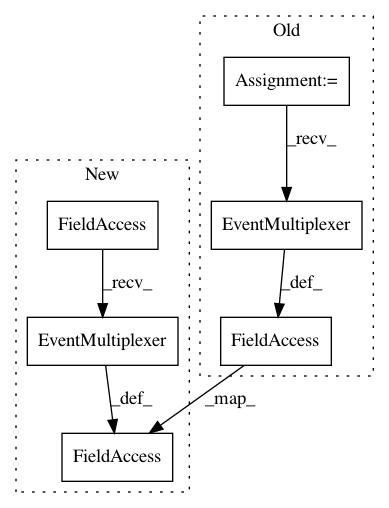

c1be95b8cac849759b20100401c94077f9bcaaf4,tensorboard/plugins/graph/graphs_plugin_test.py,GraphsPluginTest,set_up_with_runs,#GraphsPluginTest#Any#Any#,75
Before Change
self.generate_run(self._RUN_WITH_GRAPH, include_graph=True)
if without_graph:
self.generate_run(self._RUN_WITHOUT_GRAPH, include_graph=False)
multiplexer = event_multiplexer.EventMultiplexer()
multiplexer.AddRunsFromDirectory(self.logdir)
multiplexer.Reload()
context = base_plugin.TBContext(logdir=self.logdir, multiplexer=multiplexer)
self.plugin = graphs_plugin.GraphsPlugin(context)
def testRoutesProvided(self):
Tests that the plugin offers the correct routes.
After Change
self.generate_run(self._RUN_WITH_GRAPH, include_graph=True)
if without_graph:
self.generate_run(self._RUN_WITHOUT_GRAPH, include_graph=False)
multiplexer = event_multiplexer.EventMultiplexer()
multiplexer.AddRunsFromDirectory(self.logdir)
multiplexer.Reload()
context = base_plugin.TBContext(logdir=self.logdir, multiplexer=multiplexer)
self.plugin = graphs_plugin.GraphsPlugin(context)
def testRoutesProvided(self):
Tests that the plugin offers the correct routes.
In pattern: SUPERPATTERN
Frequency: 3
Non-data size: 6
Instances
Project Name: tensorflow/tensorboard
Commit Name: c1be95b8cac849759b20100401c94077f9bcaaf4
Time: 2017-08-17
Author: jart@google.com
File Name: tensorboard/plugins/graph/graphs_plugin_test.py
Class Name: GraphsPluginTest
Method Name: set_up_with_runs
Project Name: tensorflow/tensorboard
Commit Name: c1be95b8cac849759b20100401c94077f9bcaaf4
Time: 2017-08-17
Author: jart@google.com
File Name: tensorboard/plugins/text/text_plugin_test.py
Class Name: TextPluginTest
Method Name: setUp
Project Name: tensorflow/tensorboard
Commit Name: c1be95b8cac849759b20100401c94077f9bcaaf4
Time: 2017-08-17
Author: jart@google.com
File Name: tensorboard/plugins/text/text_plugin_test.py
Class Name: TextPluginBackwardsCompatibilityTest
Method Name: setUp